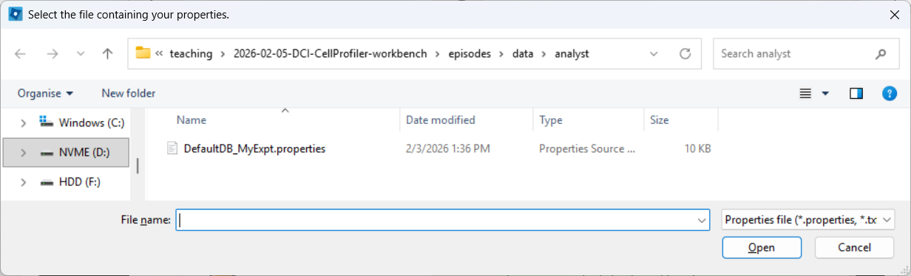
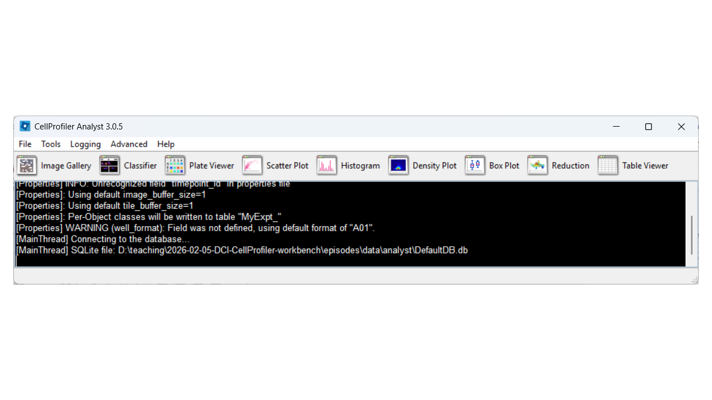

Advanced: classifying cells in CellProfiler Analyst
Last updated on 2026-02-09 | Edit this page
Overview
Questions
- How do you classify cells with CellProfiler Analyst?
- What files do you need to move from CellProfiler to CellProfiler Analyst?
- How can you tell whether your classifier is performing well?
Objectives
- Demonstrate how to export a database and properties file from CellProfiler.
- Walk through the CellProfiler Analyst interface (image viewing + classifier).
- Gain experience training and evaluating a simple phenotype classifier.
CellProfiler Analyst: an introduction
CellProfiler Analyst (CPA) is a companion tool to CellProfiler. While CellProfiler is used to segment objects and measure them, CPA is often used to explore those measurements and to classify cells into phenotypes (e.g. “healthy” vs “unhealthy”) using machine learning.
Why would we want to do this?
- You may want to scale up detection of a phenotype that is obvious to a human but hard to summarize with a single metric.
- You may want to identify rare events, like mitotic cells.
- You may want to find abnormal cell states, e.g. stressed or apoptotic cells.
How does CPA make predictions?
CPA uses features measured by CellProfiler to decide which phenotype
a cell exhibits. Note that this means that any work done in CPA is
heavily influenced by the features measured in CellProfiler: if we only
used the MeasureObjectSizeShape module while running
CellProfiler, then CPA will not be able to use any fluorescence
intensities to make classifications. It is therefore important that the
CellProfiler pipeline captures as much information as possible to
increase the chances of making accurate predictions using CPA.
CPA has rough edges
CPA is useful, but less actively developed than CellProfiler, and it can be “picky” about inputs. Today we will likely see at least one rough edge: CPA expects a clean 1-to-1 relationship between objects in the database (e.g. one cell ↔︎ one nucleus), but not all pipelines export perfectly into a CPA-friendly format without additional processing.
Preparation
Before proceeding, make sure you:
Install CellProfiler Analyst
Download and install CPA from: https://cellprofileranalyst.org/releases-
Download the additional sample data
- SQLite database: DefaultDB.db
- Properties file: DefaultDB_MyExpt.properties
First open of CellProfiler Analyst
CPA always needs a properties file to know:
- where your database lives,
- what tables/columns hold object measurements,
- where to find images.
Challenge: open CPA
- Launch CellProfiler Analyst.
- Don’t select anything yet—just observe what CPA asks you for.
What file does it require before you can do anything useful?
CPA requires a properties file
(.properties) that describes the database and how to
interpret it. You can generate this from CellProfiler
(ExportToDatabase), or use the pre-made one for this
workshop.
Creating CPA inputs from CellProfiler (ExportToDatabase)
CPA expects measurements in a database (often SQLite). CellProfiler can create this using the ExportToDatabase module.
This export is different from
ExportToSpreadsheet:
- ExportToSpreadsheet creates human-readable tables (CSV) that are great for R/Python/Excel.
- ExportToDatabase creates a database plus an optional CPA properties file that CPA can read.
Add and configure ExportToDatabase
In CellProfiler, add:
+ Add → File Processing → ExportToDatabase
Then adjust these settings:
-
Create a CellProfiler Analyst properties file? →
Yes -
Which objects should be used for locations →
Nuclei_Filtered -
Select the plate type →
384 -
Sekect the plate metadata →
Series -
Select the well metadata →
Well - Output file location → (choose an output folder you can find again)
Challenge: add ExportToDatabase and generate CPA files
- Add ExportToDatabase to the end of your pipeline.
- Configure it to generate a CPA properties file.
- Run your pipeline on a small subset of images.
- Locate the exported database (
.db) and the generated properties file (.properties).
Can you find both files on disk?
You should see a SQLite database file (.db) and a
.properties file in your chosen output folder. The
.properties file is what CPA opens. If you are struggling
to generate the right files, keep reading - you can use the provided
files for now.
Object relationships can break CPA
You may see a warning in CellProfiler’s ExportToDatabase module along the lines of:
“Cytoplasm is not in a 1:1 relationship with the other objects”
This typically happens when some objects were discarded (e.g. border filtering).
Fixing this properly often requires filtering or restructuring the tables in SQLite/Python, which is beyond today’s workshop (see below).
Using the provided database
While you can use the database you created above, it will lead to some issues in CellProfiler Analyst, because we removed cells touching the image border.
Instead, use the provided database and properties file:
- SQLite database: DefaultDB.db
- Properties file: DefaultDB_MyExpt.properties
If you generated your own properties file and want to reuse it, make sure the database location inside it points to the database you are using.
You have to modify the
DefaultDB_MyExpt.properties file in a text editor to update
the database path line (line 10). Enter the path to where you downloaded
the database file, then save it.
Viewing images in CellProfiler Analyst
CPA allows us to view quickly. This may seem pointless with only two images we are using here, but in a 384-well format you quickly find yourself with thousands of images, if multiple images were taken per well, making it difficult to get an overview of all images. This section will briefly take you through viewing images in CPA.
Load the properties file
Open CPA and load the .properties file by following the
images below.
CPA after launching: 
Selecting a properties file (use the downloaded one, after editing it as described above): 
CPA after loading the properties file, if everything went well: 
Open the Image Gallery tool
In CPA, open the Image Gallery. To do so, click on the Image Gallery tool:

Adjust contrast
In the top menu, open View → Image Controls and increase contrast so cells are easier to see (e.g. 150-200% as a starting point).

Open a full image
Close the controls window, then double-click a thumbnail to open the image:
When the image opens, CPA will assign colors to channels. You can change which dye maps to which color using the channel controls at the top.
Now examine what CPA is showing and how the channels are currently colored.

Change the channel colors by clicking the channel name/color controls.
For this tutorial, map:
- DNA → blue
- Actin → green
- Tubulin → red

This is a basic overview of how you can quickly view images in CellProfiler Analyst. Next, we will move on to a more important task: classification.
Classifying cells with CellProfiler Analyst
We will now train a simple two-class classifier. The exact labels are arbitrary; the point is to learn the workflow and see how classification quality depends on what examples you provide.
For this exercise, we will classify cells as healthy and unhealthy.
Open the Classifier tool
Open Classifier in CPA, then click Fetch! to load cell thumbnails.


As before, you may need to re-adjust visibility via View → Image Controls, and confirm your channel color mapping is still sensible.
Rename classes
By default, CPA shows “positive” and “negative”. Rename them:
- Right-click the black box under positive → Rename class → Healthy
- Right-click the black box under negative → Rename class → Unhealthy

Label training examples
Now start sorting cells based on your judgement. You can drag-and-drop thumbnails into a class, or:
- select a thumbnail and press
1to assign Healthy - select a thumbnail and press
2to assign Unhealthy
Try to label at least ~20–50 examples total (more is better).
Agreeing on a definition on “healthy” and “unhealthy” will be impossible here, but in a more realistic biological setup we might identify, for example, rounded or elongated cells, which are more easily distinguished visually.
You can already train the classifier at this step by clicking
Train, however, it will be biased towards features with
large numeric range.
Enable feature scaling
To avoid features with large numeric ranges dominating the classifier, enable scalar normalization:
Advanced > Use Scalar
Train and inspect features
Train the classifier (button name may be “Train”, or training may happen automatically depending on your version/settings). CPA will show which measured features it is using.
Evaluate the classifier
Next, we wish to check what the classifier is detecting in our two images. To do so, select:
Evaluation > Classification Report

Then click Evaluate.
CPA will show a report with metrics such as precision, recall, and F1.
- Precision: of the cells predicted as Healthy, how many were labeled Healthy?
- Recall: of the labeled Healthy cells, how many did the classifier identify as sch?
- F1: a balanced score combining precision and recall (useful when classes are imbalanced, like here)

Score all images
As a further evaluation, we can predict phenotypes in all images using Score All.
CPA will produce a table summarizing class enrichment per image/condition. In our dataset, you should see a trend consistent with the experiment: well B02 (i.e. DMSO) is (non-significantly) enriched for Healthy cells compared with cytoD-treated (B07) images.

Conclusions
You have now gone from segmentation and measurements (CellProfiler) to phenotype classification (CellProfiler Analyst). This workflow is powerful, but it only works well when:
- you have sufficiently descriptive features and
- there is a visual phenotype.
- CellProfiler Analyst can classify cellular phenotypes using the measurements exported by CellProfiler.
- The properties file tells CPA how to find and interpret your database and images.
- ExportToDatabase can generate CPA-ready outputs, but database may need extra filtering.
- Classifier performance depends heavily on consistent labels and representative training examples.